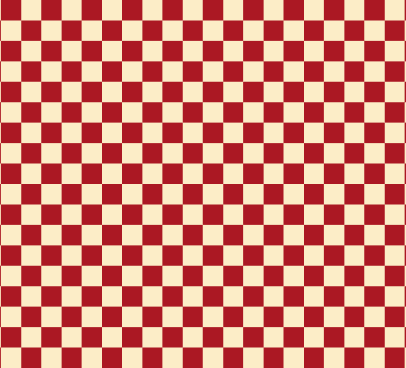
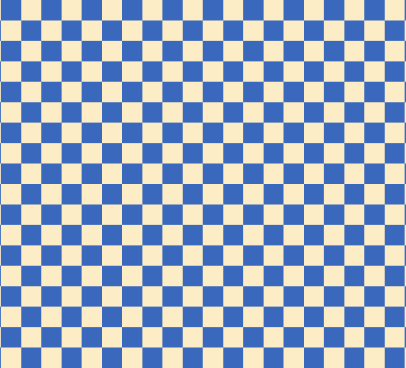
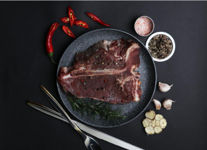
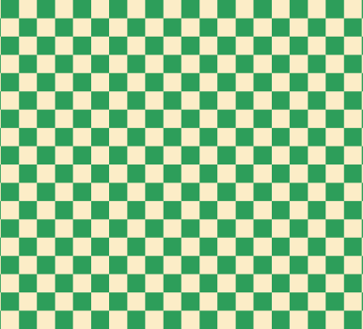
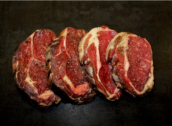
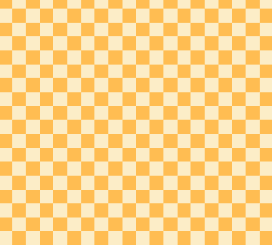
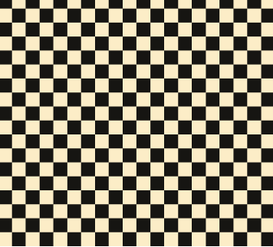
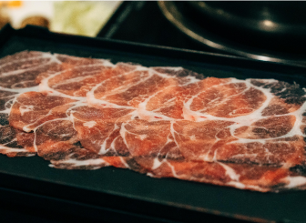

Choisis ton
disque !

Highway to Hell - AC/DC
Avec
Highway to Hell, le vinyle tranche la viande avec une force
brute et un rythme implacable, produisant
des coupes épaisses et audacieuses.
Chaque rotation insuffle une intensité sauvage,
idéale pour des
morceaux marbrés au goût puissant.
Les propriétés apportées
Épaisseur :
Texture :
Piment :
Élasticité :

HARD ROCK
PLAY
RECETTE

Strange Fruit - Billie Holiday
Le vinyle de
Strange Fruit
découpe la viande avec une profondeur
émotionnelle et une élégance sombre. Chaque
tranche est
délicate et pleine de nuances, parfaite pour des morceaux savoureux qui
laissent une impression durable.
Les propriétés apportées
Épaisseur :
Texture :
Piment :
Élasticité :

JAZZ
PLAY
RECETTE

Strobe - Deadmau5
Le vinyle de
Strobe découpe
la viande avec une précision électrisante.
Chaque rotation crée des
tranches nettes et modernes, idéales pour des pièces savoureuses, où la
texture se mêle à une
explosion de saveurs
Les propriétés apportées
Épaisseur :
Texture :
Piment :
Élasticité :

Électro
PLAY
RECETTE

Carmen - Georges Bizet
Le vinyle de
Carmen découpe
la viande avec
passion et précision. Chaque tranche est
fine et harmonieuse, parfaite pour des morceaux
légers et délicats, reflétant la fraîcheur et l'élégance du
printemps.
Les propriétés apportées
Épaisseur :
Texture :
Piment :
Élasticité :
CLASSIQUE
PLAY
RECETTE

Cielo – Benny Ibarra
Le vinyle de Cielo découpe la viande avec une
intensité piquante et explosive. Chaque tranche est
fine et pleine de caractère, idéale pour des morceaux qui embrassent la
chaleur et le
dynamisme des
saveurs épicées.
Les propriétés apportées
Épaisseur :
Texture :
Piment :
Élasticité :

CLASSIQUE
PLAY
RECETTE
Limsa d'Aulnay - Black Room
Sur un ton moins rapé qu'à son habitude, Limsa
d'Aulnay réinvente la
douceur et la
mélancolie,
attendrissant la viande ainsi
chargée d'émotions.
Les propriétés apportées
Épaisseur :
Texture :
Piment :
Élasticité :
HARD ROCK
PLAY
RECETTE